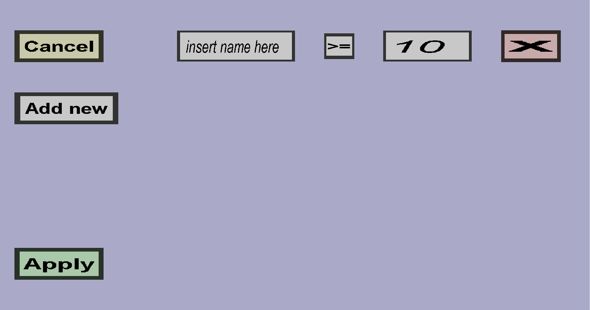

The variable constraints menu can be used to add variable constraings to (crafting recipe) ingredients. If you have 1 variable constraint, it should look like this:
Variable (constraints) are a rather complicated feature of this plug-in. A variable is basically a piece of text with an associated integer value. By default, items do not have any variables, but you can add them with upgrade recipes. For instance, you can create an upgrade recipe that will give an item a "test" variable with associated value 1. If you then add a variable constraint here that states test = 1, only items that were previously upgraded by that upgrade recipe can be used as ingredient in this recipe.